From raw text to annotated corpora: A practical introduction to INCEpTION
Let’s start!
Welcome! In today’s workshop, we will explore how to get from raw text data to an annotated dataset using a Python pipeline for preprocessing and INCEpTION for annotation. Before the workshop, you were asked to download and install Python and, if you wish, install PyCharm or another text editor. Another important preparation step is to clone or download the GitHub repository that I created during my PhD. You can find it here.
How do I download the GitHub repository?
To download the GitHub repository, click the green “Code” button and then select “Download ZIP”, as shown in the screenshot below.
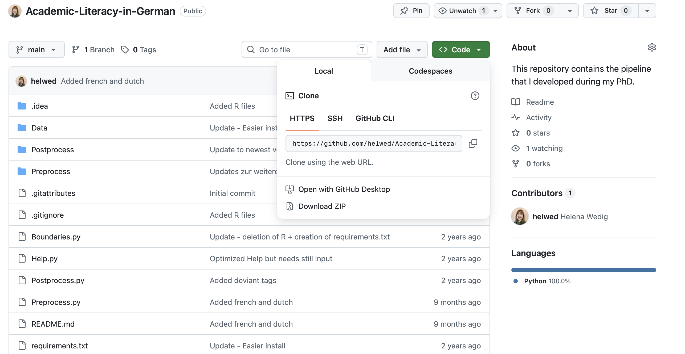
After downloading the folder, you can unpack it in a location of your choice—ideally in a local folder, not on SharePoint or another cloud service.
How do I clone a GitHub repository?
To clone a GitHub repository, you need to have a GitHub account. You do not need one for today’s workshop, since we can also just download the repository, but I strongly recommend using version control (and Git) during your PhD. Cloning the repository and regularly pulling the latest version allows you to benefit from updates and bug fixes.
The “easiest” way to manage GitHub repositories is with GitHub Desktop, but since it requires installing an application, this may not be allowed on managed university computers. Instead, you can use the command line: first navigate to a folder of your choice using cd (e.g., cd Documents) and then type the following command:
git clone https://github.com/helwed/Academic-Literacy-in-German.git
I downloaded the folder! What now?
After cloning or downloading, you should see a new folder with the name “Academic-Literacy-in-German”.
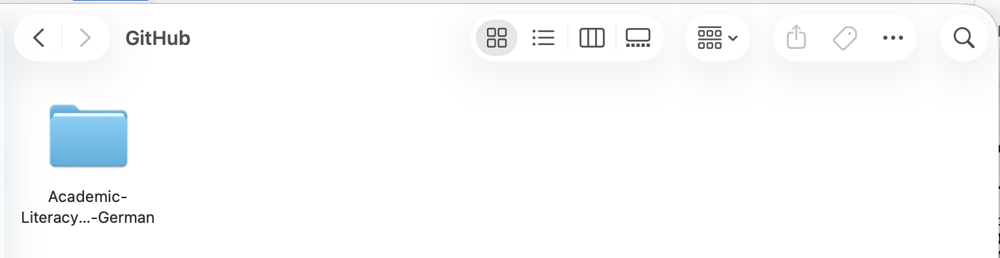
Now that we have the repository, we can start “installing” the pipeline. To do this, we will follow the steps documented on the GitHub page.
The first step is optional, as some of you may not have access to Conda. If you would like to learn how to use it, I recommend looking at some material I created previously here.
If you do not have (or do not want to have) conda, you can also directly type python -m venv Academic-Literacy-in-German in your command line. After that, you activate it using source Academic-Literacy-in-German/bin/activate and you install the needed packages using pip install -r requirements.txt.
Now, let us not forget to download the language model:
- German:
python -m spacy download de_core_news_sm - French:
python -m spacy download fr_core_news_sm - Dutch:
python -m spacy download nl_core_news_sm - English:
python -m spacy download en_core_web_sm
You then create a folder with the name of your corpus (without spaces) in the subfolder Data found in Academic-Literacy-in-German. Following, you paste your raw text data in a subfolder called raw.
Preprocessing
To preprocess your raw data, it is important that it is stored in .txt files, similar to the text shown in the screenshot below.
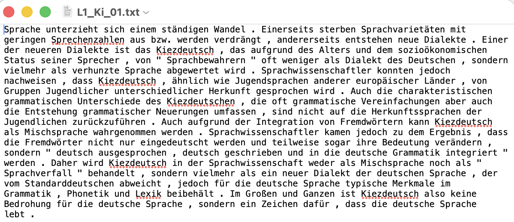
After placing your raw text files in the folder, you can start the preprocessing pipeline by running the command:
python preprocess.py
The program will then guide you through the process.
It will look similar to this:
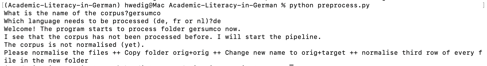
Your folder structure should now look like this:
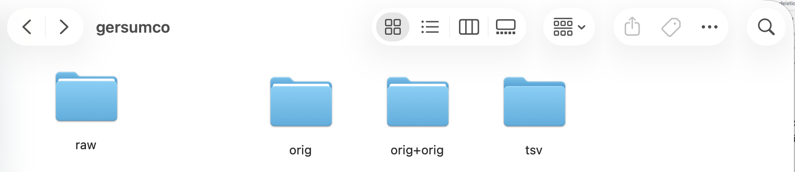
In addition, the program will ask you to add an orig+target folder to the directory.
To do this, you can copy the orig+orig folder and rename it to orig+target.
Normalize your data!
Now, you can manually normalize your data. To do this, open each file and edit the second word in each line. The first word (before the tab) is the orig.
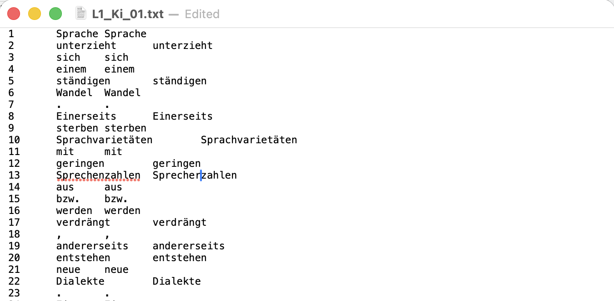
Do you notice that some words have not been correctly separated? Now is your chance to fix that.
Do you assume that no mistakes were made? Then you can skip this step (but still create the orig+target copy).
After normalizing the data, you can run preprocess.py again.
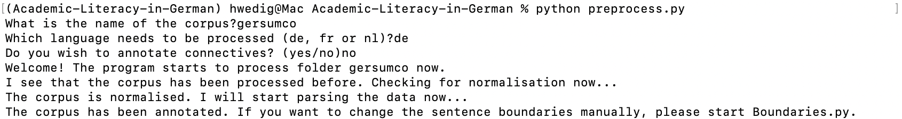
Exercises - Preprocessing
Exercise 1a
Download the test data that was provided by the “European Parliament Proceedings Parallel Corpus 1996-2011” (Koehn, 2005) here. I added some changes for the purpose of this course. Find the original data here Take the text file, follow the described steps and start the normalization process. Work through a minimum of 30 token.
Exercise 1b
Create a text file (in utf-8 encoding) and write a few sentences in it. Go through the process with your text file.
Adapt sentence boundaries!
Did you look at your data and notice that some sentence boundaries were not detected correctly? You can adjust them now using boundaries.py. To do this, run:
python boundaries.py
The program will guide you through the process.
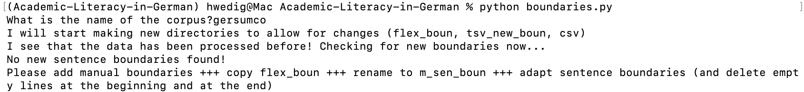
You now have to add new boundaries to m_sen_boun. To do this, copy the flex_boun folder and rename it to m_sen_boun. After that, you can change the boundaries by moving the empty lines: deleting an empty line connects two sentences, while inserting a new empty line separates two parts.
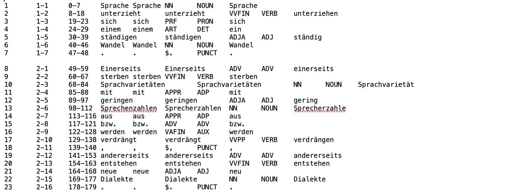
After adapting the sentence boundaries, run boundaries.py again.
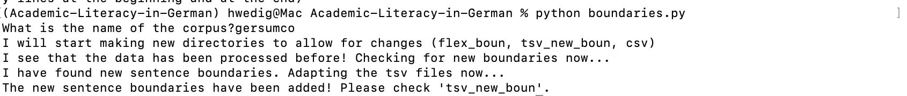
After this step, your data has been successfully preprocessed.
Exercises - Sentence Boundaries
Exercise 2a
Take the output of the normalization and check whether the sentence boundaries have been annotated correctly. Work through a minimum of three sentences
Exercise 2b
Take the output of the normalization of your personal text files. Check whether the sentence boundaries have been annotated correctly and correct them if needed.
We are ready for INCEpTION!
Let’s have a look at INCEpTION now that we have some data. You can access it using the following link:
https://inception.flw.uantwerpen.be/login.html
I created accounts for everyone that did not have one yet. The username is the combination of your first letter and your last name (e.g. HWedig) and the password is your firstname, today and “inception” (e.g., Helena26062026inception).
Once you log in, your INCEpTION instance should look similar to this:
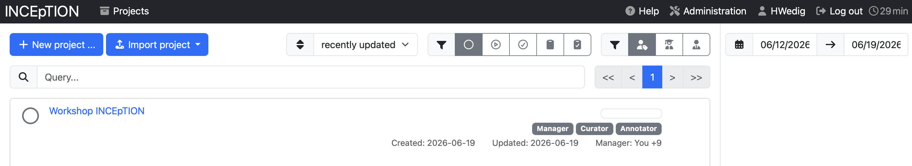
I created a shared project for all of us and made you managers there, so we can explore all functionalities together.
This is how your overview should look like after clicking on the project:
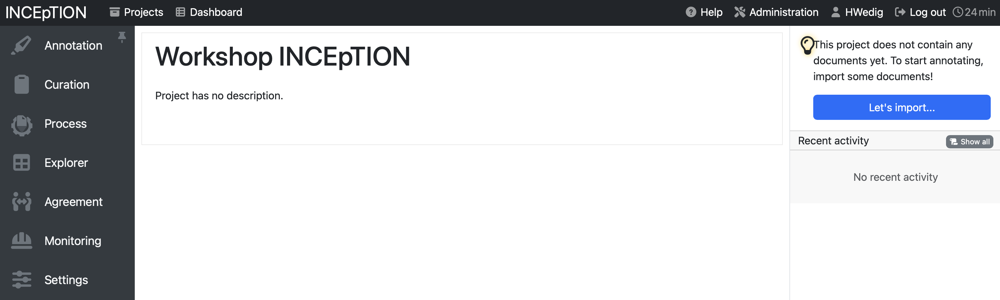
Manage your project
Upload your data
- see here for the official documentation
To upload your data, click on Settings and then on Documents. Click in the field after Files to import to select the files and folders you want to upload. If you want to upload the preprocessed data that we prepared today, choose the format WebAnno TSV 3.3, but it is also possible to upload other formats.
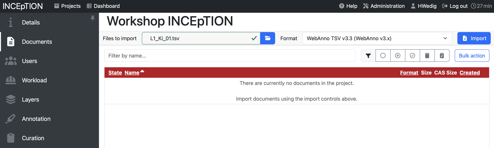
If you already have pre-annotated data, make sure that the corresponding annotation layers are defined under Layers and that the tags you use are listed under Tags; otherwise, INCEpTION will reject the upload.
Adding Layers
- see here for the official documentation
To add a new layer, you can click on the section Layers in the project management environment. Here, you see pre-defined categories, but also the option to Create a new one.
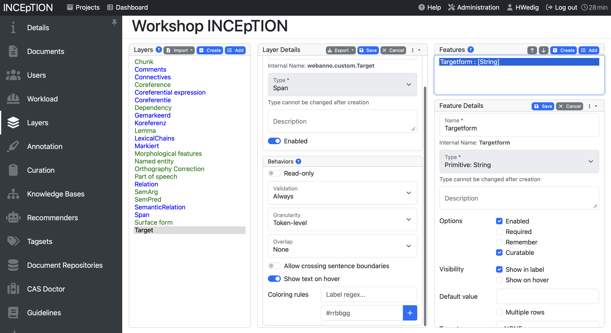
When creating a layer, you can choose between multiple types: Span, Chain, Relation and Document Metadata.
- A span to annotate continuous segments of text
- A relation to annotate relations between spans
- A chain to annotate directed sequences of connected spans
- A document metadata layer to annotate document-level information
Additionally, you can influence the behavior:
- Validation allows to check whether annotations exist which are not conforming to the current behavior settings
- Granularity influences how long/broad the spans can be. If it is set to character-level, annotations can be created anywhere. Token-level limits annotations to full tokens and sentence-level to full sentences.
- Overlap allows to limit the overlapping of spans. Stacking would mean that two annotations span over one full segment, overlapping on the other side means that they are not fully covering the same segment, but overlap on part of it.
- You can also allow annotations to cross sentence boundaries which is handy for chains and relations.
The features on the right-hand side allow to set how the layer is annotated. If the type is set as string, for example, you can annotate the token with a string. You can also decide to create links here, to use numbers or a knowledge base. Inception offers a detailed description here. For us, it is important to know that we can link our tagsets with the layers here using the setting “tagset”.
Exercises - Project Management
Exercise 3a
Everyone gets an annotation layer and a tagset to add to Inception. Add it to the shared project.
Exercise 3b
Upload your text file (as tsv) to Inception.
Annotate your data
- see here for the official documentation
To annotate your data, you need to open one of your documents. You can choose one in this document overview:
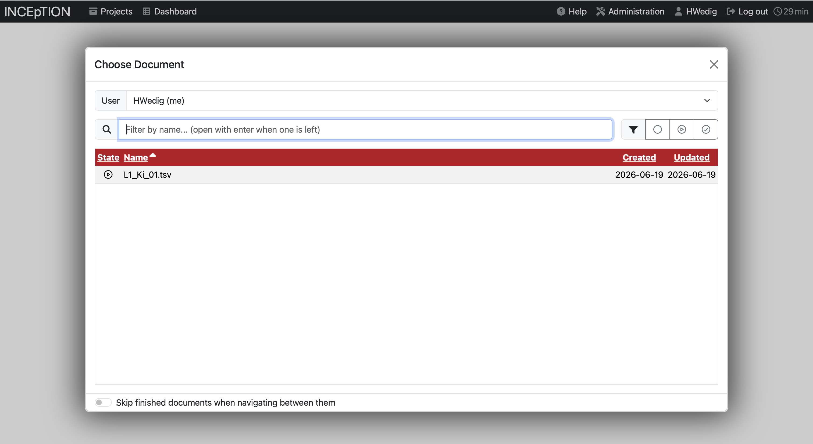
Once the document is open, it will look like this:
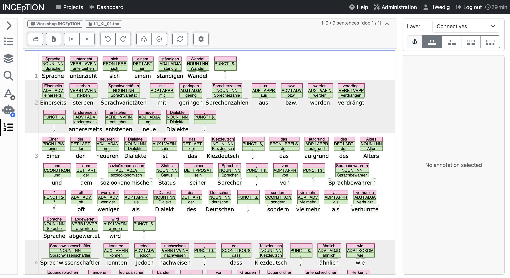
You can see multiple functionalities here. The upper pane above the text allows you to…
- …browse your files
- …export the specific document
- …switch between documents
- …undo and redo actions
- …reset the document
- …mark the annotation as completed
- …refresh the document
- …and open preferences
The pane on the left allows you to…
- …list the annotations
- …have a look at the layers
- …search the document
- …use active learning
- …use a recommender
- …and have a look at statistics
To annotate you will mainly work with the big middle text pane. Here, the text is displayed and the annotations can be added. Let’s have a look how to annotate spans first.
Annotating spans
There are multiple ways to annotate token depending on the granularity that was set for the layer. In most cases you can use your mouse to select a span to annotate. It is advised to pay attention to the range of the span that is selected, since single characters can get unselected in the process.
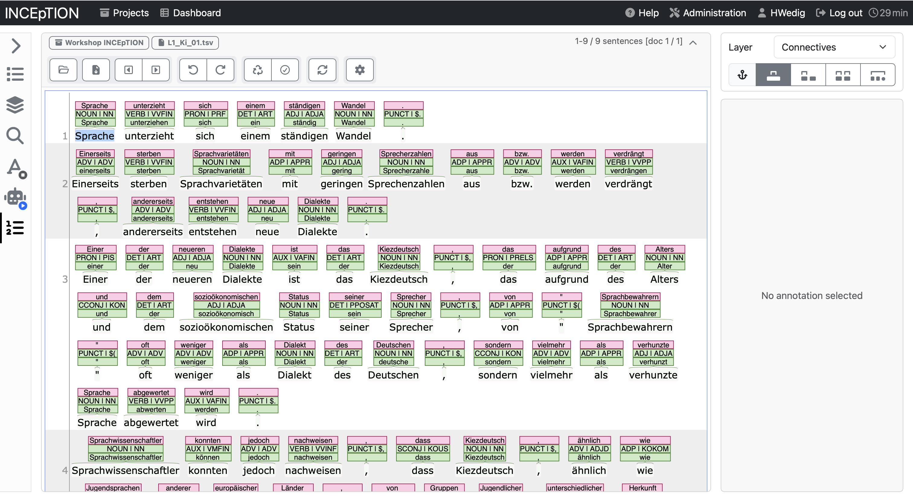
Once a span is selected, and you let go of the mouse, an annotation window opens on the right-hand side.
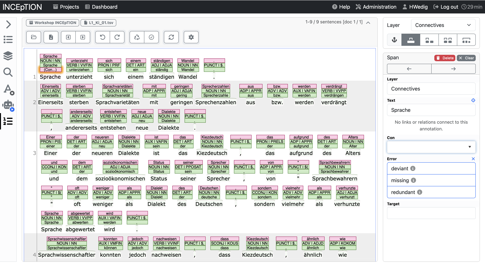
In the example below, you see the options for the Connective tagset. The annotation category Con allows to add the type of connective, error allows to annotate whether it is an error and target which would be the correct form.
Let’s have a look at how it looks like in the annotated form.
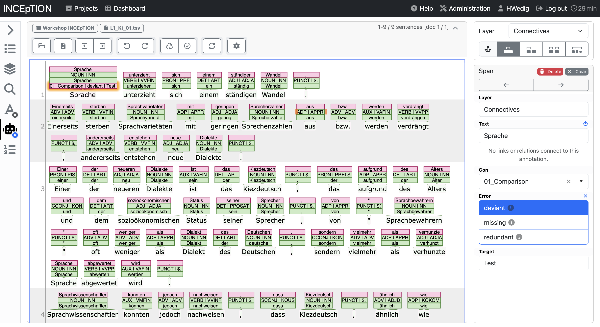
You can see that by filling in the annotation on the right side, the annotation has been added to the token in the middle text field. In this way, you can work and add every layer that you defined and build your own annotated corpus.
Annotating chains and relations
Another kind of annotation that might be relevant to you are chains and relations. The difference between the two is that chain elements depend on each other and are leading back to one element at the beginning of the chain while relations are mostly between two elements.
To annotate a relation or a chain you have to click on an already annotated element and then drag it to another element. An arrow will help you visualize this movement.
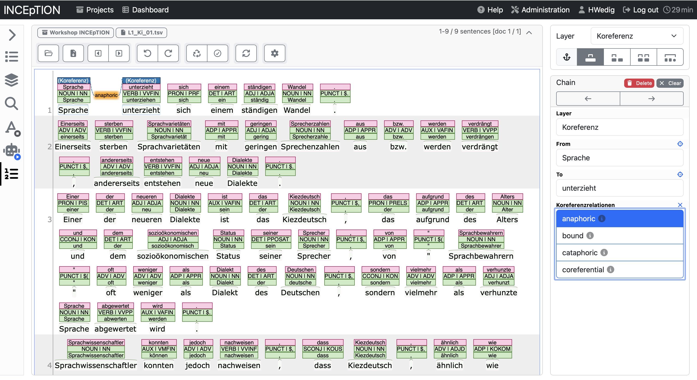
After marking the relation you can annotate what kind of relation it is. Afterward, it will be shown between (or above) the two elements.
Exercises - Annotation
Exercise 5a
Annotate the europarl.txt document with your layer and tagset according to the guidelines that you can find online. You are now the “expert” of your layer.
Exercise 5b
Depending on the time, we will do this in four rounds (in a group of four): 1. Sit together and decide which of the four layers you want to annotate. The “expert” explains the annotation layer and the tagset. 2. Sit away from each other: Annotate the text document that the “expert” of that specific layer had uploaded.
If we have enough time, we can do this for every annotation layer.
Curating annotations
- see here for the official documentation
To allow for the highest quality annotation of your data, it is advice to have multiple annotators work on one text and to curate the result afterward. Inception allows you to do that using the Curation pane.
In order to curate documents, they need to be marked as “finished” first. Afterward, you can open them and will see all annotations in one overview as seen below.
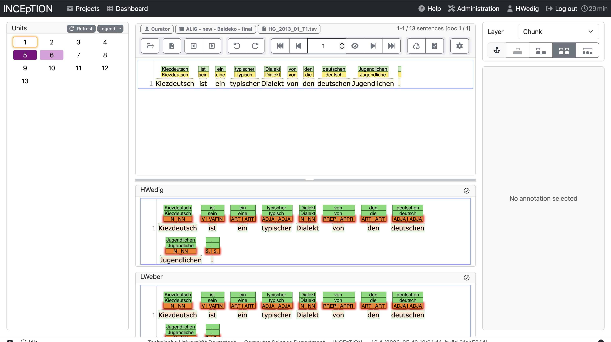
If the two versions differentiate from each other, the line will be highlighted on the left side. You can curate the result by clicking on the annotation that you seem as right. It will automatically be added to the curated version above.
Calculate the annotation agreement
You can also use INCEpTION to have a look at the annotation agreement between annotators. To do so, you need to open the Agreement pane in the overview. You will have several options to calculate the agreement (e.g., only for finished documents). You can also have a look at the agreement per document or per annotator pair.
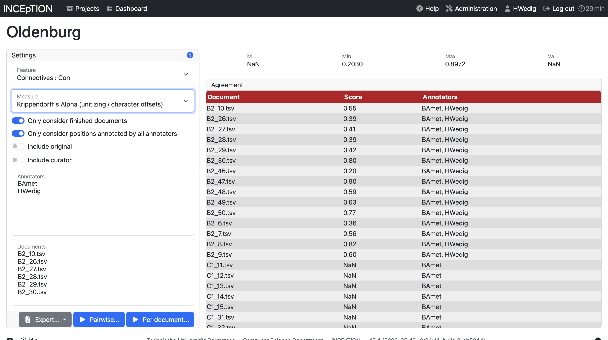
Exercises - Curation and Agreement
Exercise 6a
Sit together and curate the annotations that you made.
Exercise 6b
Calculate your annotator agreement.
Export your data
After annotation and curation you might want to export your data to perform data analyses. You can do that in the project management environment by clicking on Export.
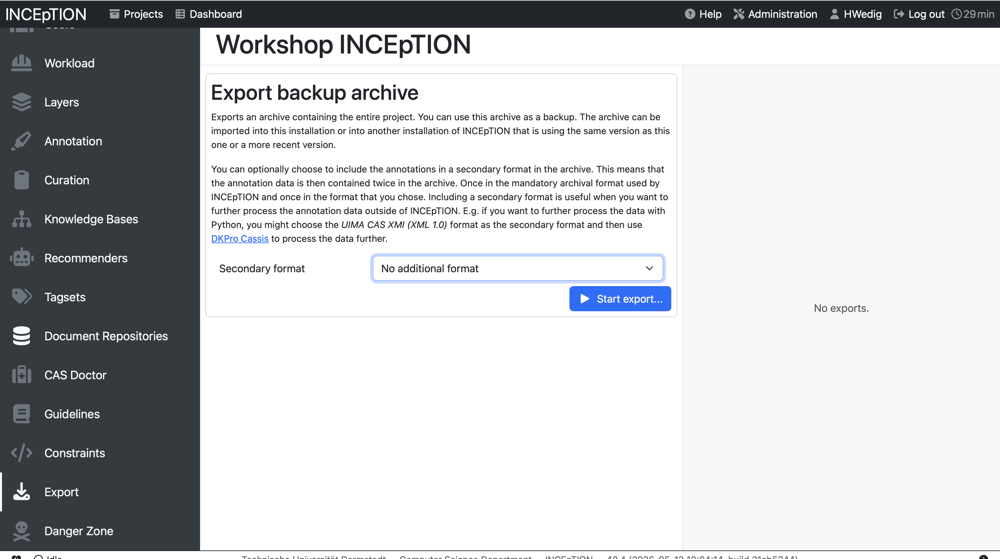